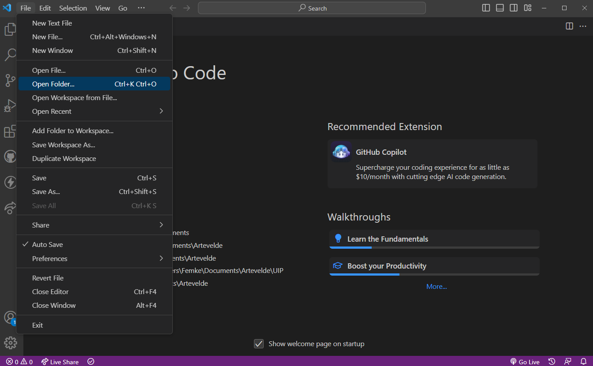
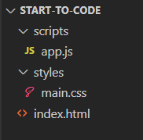
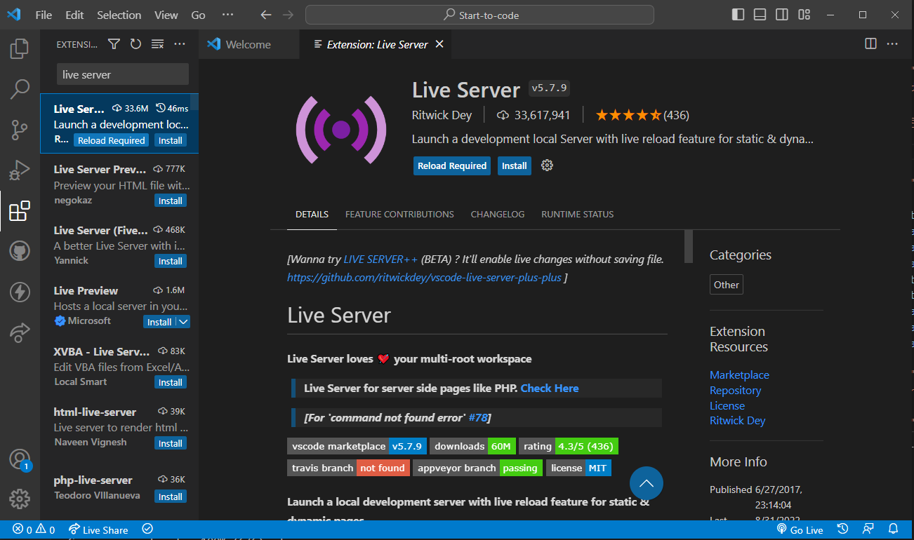
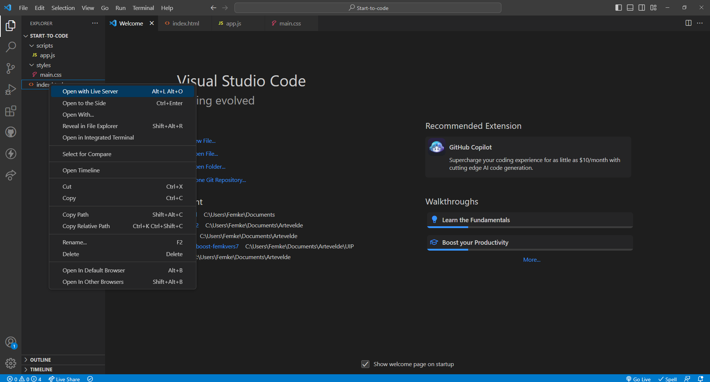
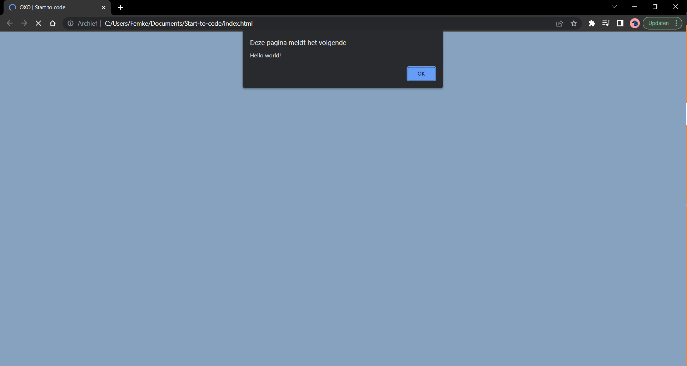

Tijd om te bewijzen dat iedereen kan coderen, ook jij!
Aan de hand van deze tutorial maken we een eenvoudig OXO-spel dat je zelf kan ontwerpen!

We zullen dit maken met behulp van drie programmeertalen:
-
HTML: Structuur
-
CSS: Styling
-
JavaScript: Interactiveit
-
Getting Ready
Voordat we kunnen programmeren, hebben we een code-editor nodig. Wij zullen gebruik maken van Visual Studio Code
-
Download Visual Studio Code
-
Maak een map aan op een locatie naar keuze. Bijvoorbeeld: een map "Start-to-code" op je bureaublad
-
Open de gemaakte folder in VSCode
 -
Maak volgende mappenstructuur na:
FYI:
Een webbrowser zal binnen een map altijd op zoek gaan naar het bestand met de naam
index.html. Dit bestand moet dus altijd bestaan, en zal als eerste geopend worden. -
Optioneel: Installeer de Live Server extensie in Visual Studio Code. Met deze extensie zal je webpagina automatisch herladen telkens je je bestand opslaat

Zie zo, nu staat alles klaar om aan het echte werk te beginnen.
-
-
HTML
Voor we onze pagina kunnen opmaken of interactiveit kunnen toevoegen, hebben we structuur nodig. Deze structuur maken we in HTML.
In HTML maken we gebruik van
<tags>die de structuur bepalen. Alles wat we binnen deze<tags>schrijven, zal op de pagina verschijnen.-
We beginnen met de basistructuur. Je kan deze hieronder kopieren of je kan zoals echte programmeurs gebruik maken van de sneltoets:
Ga naar je
index.htmlbestand. Type een ! en druk vervolgens op tab. Tada!Pas de titel gerust aan!
FYI:
De
<title>zal de naam van je tablad zijn in de webbrowser. -
Alle inhoud die op de pagina moet verschijnen zullen we tussen de
<body>-tags plaatsenWe voorzien onze pagina van een titel
<h1>en de structuur van het gamebord. Dit zal bestaan uit negen vakjes.FYI:
We kunnen aan elke tag ook een
class,iden/ofdatameegeven. Deze elementen kunnen we later gebruiken om specifieke segmenten te identificeren.
-
-
CSS
Momenteel zien we op onze pagina nog niet veel verschijnen. Het speelveld is al aanwezig, maar het heeft nog niet de vorm die we wensen. We gebruiken css om de inhoud van onze pagina op te maken.
-
Laten we eerst experimenteren door de achtergrond van kleur te veranderen. In je
main.cssbestand, typ of kopieer onderstaande en kies je favoriete achtergrondkleurFYI:
Hoewel er enkele kleurnamen ter beschikking worden gesteld, gebruiken programmeurs meestal hex-, rgb-, of hsl-kleurcodes
Open je pagina in de browser. Als je de Live Server-extensie gedownload hebt, kan je kiezen voor "Open with Live Server". Zo niet, kies voor "Open with Default Browser". De webpagina zou nu gevuld moeten zijn met je kleur naar keuze.
 -
Oké, dan gaan we verd-... Hoe bedoel je het werkt niet...? Aha, gefopt!
Dat is heel normaal dat dat nog niet werkt, we moeten namelijk nog tegen onze HTML code zeggen dat hij de styling uit
main.cssmoet gebruiken.Dat doen we door onderstaande
<link>toe te voegen binnen onze<head>-tagsNu zou het wél moeten werken. Geen mopjes meer!
-
Nu dat we weten dat onze
index.htmlenmain.csssuccesvol gelinkt zijn, kunnen we overgaan tot het echte werk. Kopieer onderstaande code in jemain.cssbestand en sla op. Experimenteer gerust met alle elementen onder /*styling*/!FYI:
Als je commentaar wil schrijven in je CSS of JavaScript bestand, laat je de tekst vooraf gaan met
//of door je commentaar te omsluiten met/* */. Alle tekst die hierachter/hiertussen staat zal genegeerd worden.
-
-
JavaScript
Nu hebben we een pagina met spelbord, maar we kunnen nog niet spelen. Als we de spelvelden aanklikken, gebeurt er niets. Om deze functionaliteiten toe te voegen, zullen we JavaScript gebruiken
-
Ook nu moeten we ons HTML- en JavaScript-bestand linken. Kopieer de
<script>tag hieronder en plaats deze inindex.htmlvlak voor het sluiten van de<body>-tag. -
We testen of de pagina's succesvol gelinkt zijn. Kopieer onderstaande in je
app.jsbestand, sla op, en open je webpagina.Nu kunnen we aan het echte werk beginnen.
-
Kopieer volgende startcode in je
app.jsbestand:In JavaScript werken we met variabelen, arrays, objecten en functies. Overal waar je
constziet staan, maken we één van deze elementen aan. Van zodra een functie aangemaakt is, kunnen we deze ook oproepen. Bij het oproepen van een functie, zal deze de stappen uitvoeren die je tussen de accolades {} definieert. -
We starten met te definiëren wat er moet gebeuren als je op één van de vakjes klikt. Dit doen we aan de hand van een Event Listener. Deze Event Listener zal in actie schieten zodra de knop waar deze aan toegewezen is aangeklikt wordt. De code hieronder kan je kopieren op en plakken in je
app.jsbestandFYI:
String of tekst kan geplaatst worden tussen dubbele
""of enkele''aanhalingstekens. Maar hierboven gebruiken we backticks``. Het gebruik van backticks laat toe om variërende waarden in te voegen. Dit doe je door gebruik te maken van${} -
In deze Event Listener roepen we de functie
determineCurrentPlayer()op. Deze doet momenteel nog niets. We definiëren de functie:FYI:
Een switch statement is een constructie binnen JavaScript waarbij er nagegaan wordt aan welke waarde een bepaalde variabele gelijk is. Vervolgens worden enkel de instructies uitgevoerd die onder deze waarden gedefinieerd worden.
-
Sla alles eens op, en open je webpagina. Je kan nu al beginnen spelen!
Jammer genoeg kan je maar één keer spelen. Laat ons dus nog een reset button maken:
-
Proficiat! Het spel is klaar!
Je tegenstanders zullen zo versteld staan van het feit dat je dit helemaal zelf gemaakt hebt, dat je hen gemakkelijk zal verslaan!
Wil je er nog wat extra's bij? Kopieer onderstaande code in de juiste bestanden voor een vlotte werking van het spel.
Of programmeer de extra's zelf. Voor de liefhebbers worden alle extra's stap voor stap uitgelegd.
Uitbreiding
-
Laten we de beginnende speler willekeurig maken. Voeg onderstaande functie toe en roep deze aan, juist onder
// Wie is er aan de beurt? -
Nu kan je niet zien wie er moet beginnen? Laten we dat oplossen.
Voeg in je
index.htmltussen de<body>-tags volgende elementen toe. De opmaak kan je ook kopieren in je css bestand. Voel je vrij om alles onder/*styling*/aan te passen naar eigen wens.Nu zullen we telkens aan HTML moeten meegeven wie er aan de beurt is, zodat de opmaak aangepast kan worden. Hiervoor voegen we de
"acitve"klasse toe aan het respectievelijke element.In je
app.jsbestand: voeg de eerste twee regels toe onder// Cache elementsen vervang deselectRandomPlayer()endetermineCurrentPlayer()functie.Met deze toevoegingen kan je perfect bijhouden wie er aan de beurt is.
-
Laten we, als kers op de taart, een pop-up maken die zal verschijnen wanneer één van beide spelers wint of wanneer het game over is.
In
index.html, voeg onderstaande elementen toe tussen je<body>-tags. Dit is de basis van ons pop-up scherm. Kopieer ook de opmaak inmain.css.Je zal het scherm nog niet zien,want we hebben, in HTML, de klasse
hiddenmeegegeven. Die zorgt ervoor dat onze pop-up zich buiten het scherm verstopt, totdat er iemand wint (of het game over is)Nu gaan we, in
app.js, een aantal stappen in één keer doen:-
We halen de nodige elementen op onder
// Cache elements -
We updaten onze Event Listener, zodat er bij elke zet gecontroleerd wordt of er iemand gewonnen heeft. Vervang de code onder
// Maak de vakjes aanklikbaardoor onderstaande. -
In de functie
restartGame()mag je volgende regels toevoegen:variables.gameOver = false$winningScreen.classList.add("hidden") -
Als laatste voegen we ook een lijst toe van alle winnende combinaties. Deze zullen we later gebruiken.
FYI:
Een
!voor een variabele draait de waarde van deze variabele om. Dus in de code hierboven: alsgameOver = false, zal deze waarde omgedraaid worden naartrueen wordt de rest van de code tussen {} uitgevoerd. IsgameOver = true, zal de rest van de code niet uitgevoerd worden.Merk op: we roepen in de Event Listener drie nieuwe functies op:
checkWin(),announceWinner()engameOver(). Deze hebben we nog niet gedefinieerd. Kopieer ze hieronder:Speel gerust al eens een spelletje! Het pop-up scherm zou moeten verschijnen. In
announceWinner()engameOver()kan je de tekst die verschijnt aanpassen.In ons winscherm staan nog enkele knoppen die niet werken. We voegen enkele Event Listeners toe:
-
Goed gewerkt!!
Ik zei je toch dat je kon programmeren! Kom je nieuwe skills verder ontwikkelen in het Graduaat Programmeren aan Arteveldehogeschool!